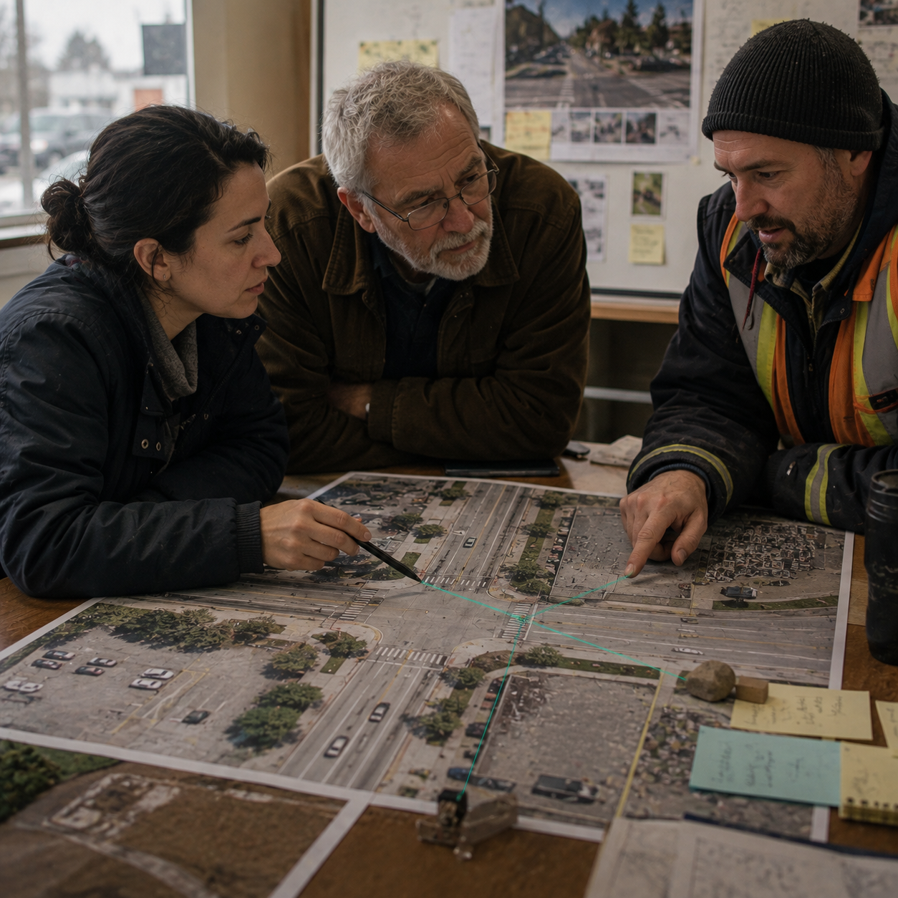

Starts fromA choice that needs to be made

SCN-048 · Choose & Govern
Structure perspectives before collective deliberation
Koali structures perspectives without reducing them to "for or against"; it connects arguments, evidence, and consequences to each option. The continuity goal is to keep contributions, disagreements, expertise, and legitimacy visible before a collective decision. In this example, the context stays connected across: problem → perspectives → data → options → deliberation → decision → measurement.
ExampleA dangerous intersection pits parents, truck drivers, cyclists, and merchants against one another
FindUnderstandLearnCollaborateChooseActRespondRemember
← Back to the full MosaicKoali mechanism
Keep contributions, disagreements, expertise, and legitimacy visible before a collective decision.
System path
Konnaxion → Ethikos → KorumKonnaxion → Ethikos → KonsultationsOrgo
How it moves
problem → perspectives → data → options → deliberation → decision → measurement
Also useful forMunicipal Government · Transportation · Public Consultation